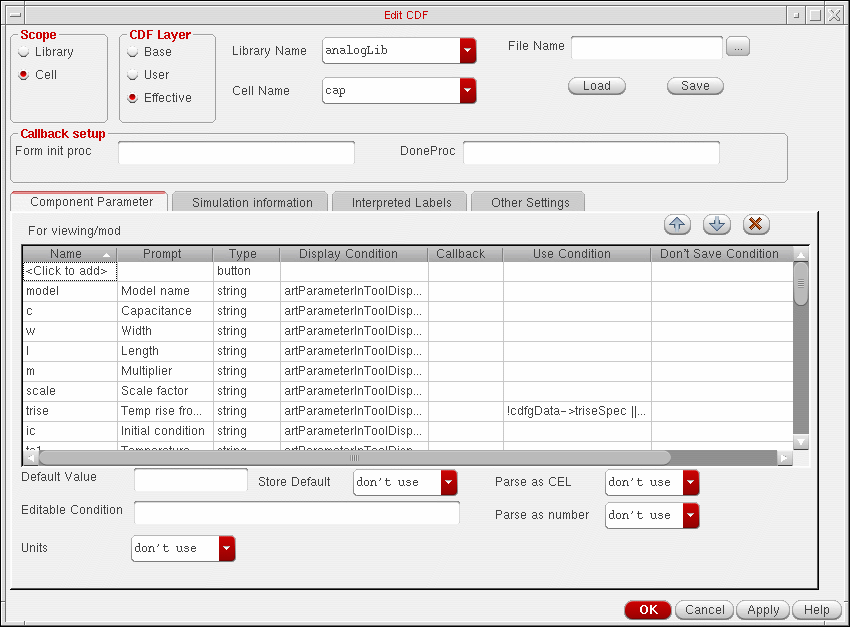
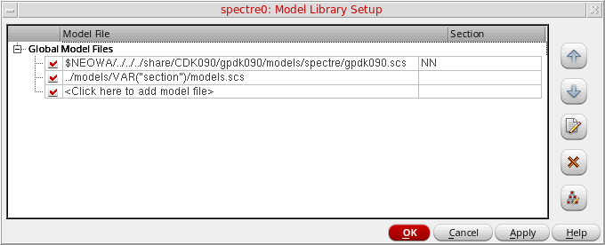

7
Working with Model Files and CDF
Model files contain definitions for models used in your design that are not defined in the library. You can specify the model files you want to reference for simulation on the
For example, the opamp schematic in the aExamples library contains instances of npn and pnp bipolar transistors (the Model name is set to npn or pnp accordingly). Cadence provides model definitions for Spectre circuit simulation of these parts in the file
your_install_dir/tools/dfII/samples/artist/models/spectre/bipolar.scs
You can declare this model library file by typing the path and file name above in the Model Library File field on the
- Specifying Model Libraries
- Associating a Model or Subcircuit Name with an Instance
- Editing Component CDF
- Adding a Model Name Parameter to a Component’s CDF
- Using Component CDF to Specify Simulation Information
- Creating a Stopping Cellview
- Varying the Model File and Section during Simulation
- Editing a Model File
- Disabling a Model File
Associating a Model or Subcircuit Name with an Instance
To associate a model or subcircuit name with an instance on your schematic do the following:
-
On the schematic, select the component.
The instance name and its parameters appear in the scrolling list area in the top section of the Parameters tab on the Variables and Parameters assistant pane. -
Locate the model-name parameter (such as model).
You can use a filter to narrow the device instance parameter selection list.
If your component does not have a model name parameter in its CDF, see _______.
If your component does have a model name parameter but the parameter value is not editable, _____. - Double-click in the Value column and type a model name.
- Use the Model Library Setup form to specify the file containing the model or subcircuit definition whose name you typed in the Value column (see ).
Related Topics
Adding a Model Name Parameter to a Component’s CDF
Making the Model Name Parameter Editable
Toggling the View on the Variables tab of the Variables and Parameters Assistant Pane
Editing Component CDF
To Edit CDF, do the following:
-
In the CIW, choose Tools – CDF – Edit.
The Edit CDF form appears.
 -
For Scope, select the Cell radio button.
See “CDF Selection” in the "CDF Commands" chapter of the Component Description Format User Guide for information about this selection. -
In the CDF Layer group box, select a CDF type: Effective, Base, or User.
See “CDF Layer” in the "CDF Commands" chapter of the Component Description Format User Guide for information about this selection. -
Click Browse.
The Library Browser form appears. - In the Library Name drop-down list, select a library.
-
In the Cell drop-down list, select a cell.
The CDF information for the cell is displayed on the Edit CDF form.
- Adding a Model Name Parameter to a Component’s CDF
- Making the Model Name Parameter Editable
- Using Component CDF to Specify Simulation Information
Adding a Model Name Parameter to a Component’s CDF
To add a parameter for model name to your component, do the following:
- Open the Edit CDF form.
- Specify the cell (component) whose CDF you want to edit.
-
In the Name column on the Component Parameter tab, click where it says <Click to add>.
Specify your model name parameter as follows:Column Value Select no from the drop-down list. You do not want your model name parsed as an expression.
Select no from the drop-down list. You do not want your model name parsed as a number.
- Click Apply to apply your changes and leave the form open, or OK to apply your changes and close the form.
For more information, see
Making the Model Name Parameter Editable
To make the model name parameter editable (so that you can vary it during simulation), do the following:
- Use the Edit CDF form to edit the component’s CDF.
- In the CDF Layer group box, select Base.
- In the Component Parameter tab, select the model-name parameter (such as model).
- In the Editable Condition field, type a non-nil value.
- Click OK.
-
On the Edit CDF form, click OK.
When you select this component instance on your schematic, the model-name parameter appears in the list of CDF Editable device instance parameters in the Parameters tab on the Variables and Parameters assistant pane.
Using Component CDF to Specify Simulation Information
To specify how you want the software to netlist your component, what parameters to pass to the underlying subcircuit or model definition, and the order of the input terminals (for netlisting), do the following:
- Use the Edit CDF form to edit the component’s CDF.
- Click the Simulation Information tab.
- Select the By Simulator radio button and select your simulator in the drop-down list.
-
In the following fields, you can specify how you want the software to netlist your component, what parameters to pass to the underlying subcircuit or model definition, and the order of the input terminals (for netlisting):
Creating a Stopping Cellview
To create a stopping cellview for your simulator, do the following:
- Edit the symbol cellview.
-
Choose Design – Save As.
The Save As form appears. -
In the View Name field, type a view name to represent your simulator.
For example, for the Spectre circuit simulator, typespectre. -
Click OK.
The environment creates a new cellview (as a directory of files) in the specified library.
Varying the Model File and Section during Simulation
To make the model file or section something you can vary during simulation, do the following:
-
On the Data View assistant pane, right-click the test or analysis name and choose Model Libraries.
The Model Library Setup form appears.
 -
In the Model File column, double-click and type a variable name for the model file you want to vary (or as a part of the model file path) using the following format:
VAR("
For example:variableModelFileName")VAR("myModelFile")
or../models/VAR("section")/models.scs
-
In the Section column, double-click and type a variable name for the section you want to vary. For example:
VAR("myModelCorner")
For more information about sections in model files, see “Corners Modeling” in the Direct Simulation Modeling User Guide. -
Click Apply.
Variables you specify using VAR (such as myModelFile or section, and myModelCorner) appear on the Variables tab of the Variables and Parameters assistant pane. -
Double-click in the Value column for each global variable and type a value. For example:
Name Value myModelCorner
myModelFile
You can vary these global variables in parametric sweeps and corners analysis.
Here is an example application using VAR in the specification of a model file to sweep through different model types.
If you have model files stored in a directory hierarchy such as the following:
../models/sectionIdentifier/models.scs
where sectionIdentifier is the model type (such as typ, ff, ss), you can create a sweep of model types as follows:
-
On the Model Library Setup form, double-click in the Model File column and type the following:
../models/VAR("section")/models.scs
-
Click OK.
The section variable appears in the Global Variables tree on the Variables tab of the Variables and Parameters assistant pane. -
Double-click in the Value column for section and click the ellipsis that appears at the right end of the field.
The Parameterize form appears. - Click Add Specification and select Inclusion List from the drop-down list:
-
In the Values field, type the set of model types (valid section names from the model file) through which you want the program to sweep.
For example:"typ", "ff", "ss"
The program sweeps through all values ofsection.
Editing a Model File
To edit a model file, do the following:
-
On the Data View assistant pane, right-click the test or analysis name and choose Model Libraries.
The Model Library Setup form appears. -
Select the model library you want to edit and click Edit File.
The model file appears in an editing window. - Make the edits you want to make.
- Save and exit the file.
- On the Model Library Setup form, click OK.
Disabling a Model File
To disable a model file for a test, do the following:
-
On the Data View assistant pane, right-click the test or analysis name andchoose Model Libraries.
The Model Library Setup form appears. - Deselect the check box for the model library you want to disable.
- Click OK.
Return to top